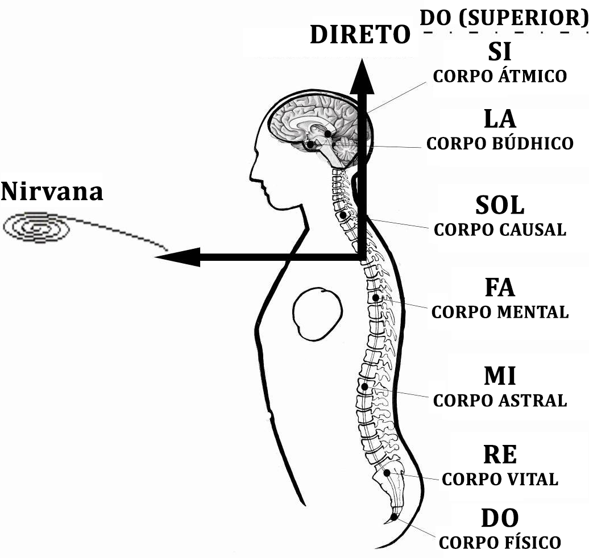
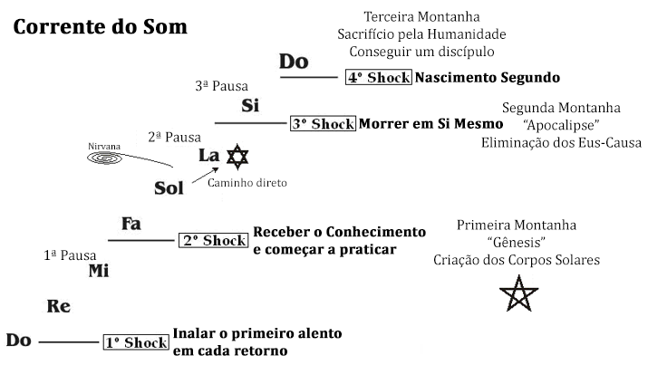

Conferência nº33
LEI DE OITAVAS E LEI DE ENTROPIA
Hoje vamos estudar esta Lei e sua oposta, a Lei de Entropia, as quais regem toda a natureza. Como conhecê-las e poder utilizá-las para lograr nosso objetivo de nos autorrealizar em uma existência.
A Lei de Oitavas nos ensina a ascender, nos mostra onde nos estancamos, por quê e como poder seguir ascendendo até a meta final, como funcionam as leis da força, etc.
A Lei de Oitavas ou a Corrente do Som, ou Corrente da Vida são a mesma Lei.
Se observamos a Escala Musical: DO-RE-MI-FA-SOL-LA-SI vemos as sete notas musicais. Para ir de um DO inferior a um DO superior, é necessário elevar-se uma oitava mais.
A esta escala a chamaremos A Corrente da Vida na que todos os seres humanos estão diretamente envolvidos, e ao mesmo tempo submetidos por ela.
Ao começar a cantar uma escala musical, DO RE MI, quando chegamos a MI encontramos a Primeira Pausa, entre as notas MI e FA. Logo depois vemos as seguintes três notas: FA SOL LA vão juntas, porém ao chegar a LA encontramos a Segunda Pausa, entre LA e SI.
Passando à nota SI vemos que está independente, e encontraremos a Terceira Pausa, entre SI e o DO superior. Isto implica que encontraremos três pausas em uma Escala Musical. A mesma coisa sucede com todos os eventos da nossa vida.
O Primeiro Choque se dá ao nascer. Ao nascer e inalar o alento, quando a chispa é conectada ao novo corpo e a vida ingressa, temos direito às notas musicais DO RE e MI. Que correspondem ao corpo físico, corpo vital e ao princípio de Alma (dado pela nota MI), acompanhados por uma personalidade com a qual nos desenvolvemos no mundo físico.
Nascemos, crescemos, nos reproduzimos, envelhecemos e morremos sem nenhum objetivo verdadeiro. Nisso estará toda a humanidade enquanto não encontrar algo que lhe permita vencer esta Primeira Pausa.
A partir do momento em que chega a MI, ou continua subindo ou regressa ao ponto de partida. Em todo caso a Lei de Entropia nos igualará no cemitério e teremos que retornar novamente uma e outra vez, até esgotar os 108 corpos físicos a que temos direito por Lei.
Aqui encontramos aos chamados homens do terceiro dia, vistos à luz do Gênese, fascinados com a existência, hipnotizados e sem sequer conhecer a razão da sua existência.
O Segundo Choque: Se alguém nos dá o Conhecimento nossa existência terá razão de Ser. "De mil que me buscam, um me encontra".
Uma vez recebido o Conhecimento nos abrem dois caminhos: praticamos e continuamos avançando ou não o praticamos e o transformamos numa crença.
"De mil que me encontram, um me segue". Depois de ter recebido o Conhecimento deveremos começar a criar no Sexo com a Energia Criadora Sexual, os Corpos Solares para avançar pelas notas musicais FA SOL e LA. Isto implica a criação dos corpos Astral, Mental e Causal Solares, ou fazer a Primeira Montanha e converter-nos em homens do Sexto Dia, segundo o Gênese. Homens feitos a imagem e semelhança de Deus, Os Homens Verdadeiros.
Porém, ainda assim não se é um Deus. É necessário vencer a Segunda Pausa. Deve dar-se o Terceiro Choque para conquistar a nota musical SI e isto implicará Morrer em si mesmo e fazer a Segunda Montanha. "De mil que me seguem, um é meu".
Sem embargo ainda nos falta vencer a Terceira Pausa. Para isso é necessário conquistar o DO superior, lograr o Nascimento Segundo, a Ressurreição, e não se pode ressuscitar sem Morrer. Esta é a Morte dos Eus Causa, que tem que dar-se para poder nascer no Mundo Espiritual (Quarto Choque). Isto implica finalizar a Segunda Montanha e começar a Terceira Montanha.
Quando a pessoa logra avançar deste DO inferior até o DO superior, se diz que logrou Nascer pela Segunda vez. Esse Nascimento de fundo seria tornar-se Ressurreto. A alternativa está aberta para todos os seres humanos, porém é absolutamente necessário que se saiba como fazer o Trabalho e como aplicar os Três Fatores da Revolução da Consciência:Nascer: Primeira Montanha, Criação dos corpos, recuperação das Águas, Gênese.
Morrer: Segunda Montanha, Eliminação dos defeitos, Apocalipse.
Sacrifício pela Humanidade: Terceira Montanha, Conseguir um Discípulo.
Lei de Entropia
É a também chamada "Lei de Igualação".
Exemplo: Se colocamos uma panela cheia de água quente junto a outra cheia de água fria vemos como se manifesta a Entropia, há um intercâmbio de calor e de frio. Por último ambas ficam iguais.
Milhões de pessoas estão metidas no caminho da Entropia; como não trabalham sobre si mesmas, cada dia se tornam mais imbecis, a mente vai atrofiando-se, os centros da máquina humana estão cada vez mais degenerados, já não lhes funcionam todas as partes do cérebro, e ao fim chega o dia em que a Lei de Entropia imola a todos no Tártaro.
Notaram como a Lei de Entropia imola às pessoas? Podem sepultar alguém num ataúde de ouro, a outro em um ataúde de madeira e por muito bonita que seja a sepultura, os dois terminam reduzidos a ossos.
Todas as coisas estão marcadas sob a Lei de Entropia, a encontramos em tudo. Os mares convertidos em lixeiras, rios contaminados, peixes moribundos, a atmosfera poluída, os frutos da terra adulterados. Eis aí a Lei de Entropia.
Somente mediante a transformação é possível vencer à Lei de Entropia, pois a transformação inclui sacrifícios, isso é ostensível.
Por exemplo: Se alguém sacrifica o desejo sexual, essa força que por meio de outra força cristaliza seus poderes em nós cria os Corpos Existenciais do Ser; se alguém sacrifica a Ira, aparece a gema preciosa da mansidão; se sacrifica à ânsia do dinheiro, a cobiça insuportável, nascerá o altruísmo. Se sacrificar a inveja, se manifestará em si, a energia filantrópica, o desejo de trabalhar pelo próximo, alegria pelo bem alheio, quer dizer, não pode haver transformação sem sacrifício.
Assim também para a pessoa que sacrifica seus impulsos sexuais, o resultado dessa energia é a criação dos Corpos Existenciais do Ser.
Se se sacrificam os Eus, destroem-se todos, o resultado desse sacrifício será a energia liberada, que dará origem ao Homem Interior Profundo. Então nos livraremos da Entropia degenerativa.
As pessoas não querem realmente sacrificar-se, não compreendem o que é o sacrifício.
É claro, podem começar por sacrificar seus sentimentos; eu lhes asseguro que as pessoas estão dispostas a sacrificar seus prazeres, até seus vícios e dinheiro, tudo sacrificarão, porém não seus sofrimentos e dores, os querem muito.
Se se começa por sacrificar seus sentimentos, se pode dar um grande passo, vencer a Lei de Entropia.
Quem de vocês está disposto a sacrificar seus sentimentos, a sacrificar-se pela humanidade? É bom sacrificar-se pela humanidade. Na realidade não nos sacrificamos para comportar-nos mal.
Não devemos pensar no sofrimento jamais. As pessoas baseiam suas experiências em seus sofrimentos, pelo que passaram nas amarguras, gozam recordando-as, dizem: "eu passei por tal ou qual coisa na rua, para ser o que sou". Se sentem importantes recordando-as.
Sacrifiquem seus sofrimentos erradicando de si mesmos os Eus que os produziram, pois tem que erradicar o Eu do sofrimento. Essa energia que resulte dali é transformação pois nasce em um Homem Diferente e vence a Lei de Entropia.